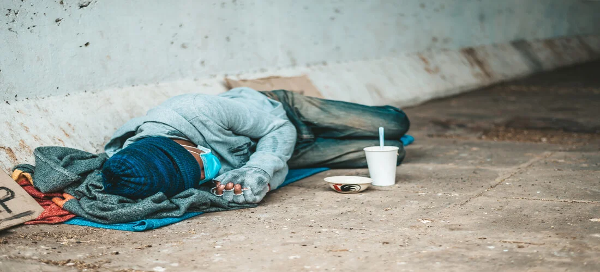

Serviço especializado ao atendimento de pessoas em situação de rua
O dia 13 de maio de 1888, data em que foi declarada a abolição da escravatura, foi quando os negros obtiveram a sua liberdade no território nacional. Embora tivessem a sua independência, não tinham um lar e muito menos renda para sobreviver. O governo do período tampouco lhes forneceu auxílio. Esse cenário de negligência colaborou com o aumento da quantidade de pessoas desempregadas, trabalhadores temporários, moradores de rua e de crianças abandonadas. Além disso, após a abolição, o Ministério da Justiça enviou um projeto denominado “repressão à ociosidade” cujo objetivo era controlar a circulação de negros nos espaços urbanos. Tal discriminação também estava explícita em forma de lei, mediante o decreto número 847/1890, arts. 399 e 400, que penalizavam a vadiagem e a pena era de 15 a 30 dias de prisão. Somente em 2009 essa lei veio a ser revogada. Passados 134 anos desde a abolição até os dias atuais, as desigualdades entre brancos e negros continuam se perpetuando, além do preconceito e da discriminação que essa parcela da sociedade sofre.